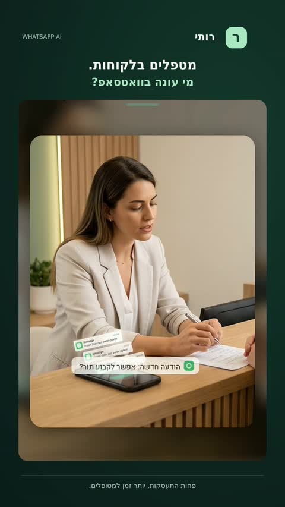

הודעות מגיעות בערב ובשבת. רותי עונה להן.
רותי היא סוכנת וואטסאפ לקליניקות ולעסקי טיפולים. היא עונה ללקוחות, קובעת תורים מול היומן, שולחת תזכורות ומעבירה אליכם שיחות שדורשות אדם.
דמו חינם של 20 דקות, והצעה מסודרת תוך 24 שעות.

הטיפול לא נעצר כדי לענות לוואטסאפ
כשאתם בטיפול, אתם לא עונים. כשאתם בבית, אתם לא רוצים לענות. ובינתיים מי ששלח הודעה מחפש מישהו אחר.
איך זה נראה היום
- פניות בערב ובסופי שבוע שמחכות לתשובה עד הבוקר
- תורים שנשכחים, ואי הגעות שאפשר היה למנוע בתזכורת
- מזכירה יקרה, או אין מזכירה בכלל
- וואטסאפ אחד שהפך לבלגן של שיחות, תורים והודעות קוליות
איך זה נראה עם רותי
- כל פנייה מקבלת מענה, גם כשהקליניקה סגורה
- רותי קובעת תורים מול היומן ושולחת תזכורות
- שיחה רגישה או דחופה מועברת אליכם עם סיכום
- התורים והשיחות מסודרים במקום אחד
שלושה צעדים
מגדירים את הקליניקה
טיפולים, שעות פעילות, כתובת, שאלות נפוצות והנחיות לפני ואחרי טיפול. אתם קובעים מה רותי אומרת ומה היא לא נוגעת בו.
רותי עונה וקובעת
היא עונה בוואטסאפ בעברית, בודקת את היומן, קובעת ומשנה תורים ושולחת תזכורות.
אתם נכנסים כשצריך
שיחה רגישה, דחופה או כזו שרותי לא בטוחה בה עוברת אליכם, עם סיכום קצר של מה שכבר נאמר.
מה אתם רואים בצד של הקליניקה
השיחות והתורים של רותי מגיעים ל-רותי CRM, מערכת בעברית לניהול לידים, פגישות ומשימות.
מה מגיע ל-CRM (הדגמה)
- סיכום שיחה לכל פנייה, כדי שלא צריך לקרוא את כל הצ'אט
- תורים, לידים ומשימות במקום אחד, בעברית
- העברות לאדם מסומנות, כך שלא מפספסים מה שדחוף
מה בדרך כלל שואלים
מה רותי עושה בפועל?
רותי היא סוכנת AI שעובדת בוואטסאפ של הקליניקה. היא עונה על שאלות נפוצות, בודקת את היומן, קובעת ומשנה תורים ושולחת תזכורות. היא עושה את זה גם בערב, בסופי שבוע ובזמן שאתם בטיפול.
מה קורה כשהשיחה רגישה או דחופה?
שיחות כאלה לא נשארות אצל רותי. כשמישהו כותב על כאב חזק, מצוקה, תלונה או כל נושא שדורש שיקול דעת, רותי מעבירה את השיחה לאדם בקליניקה ומשאירה לו סיכום, כדי שלא יצטרכו לשאול הכול מההתחלה.
מה לגבי פרטיות של מי שפונה לקליניקה?
זה נושא שעוברים עליו יחד בדמו. אפשר להגדיר מה רותי שואלת, ולהשאיר בחוץ מידע רפואי שאין צורך לאסוף בצ'אט. אנחנו לא מבטיחים עמידה בדרישות רגולציה, והאחריות על המידע בקליניקה נשארת אצלכם, לכן כדאי להתייעץ עם הגורם המקצועי שלכם לגבי הנהלים.
רותי מחליפה את המזכירה?
לא נועדה להחליף מגע אנושי. רותי לוקחת את העבודה החוזרת: שאלות על שעות וכתובת, תיאום תורים ותזכורות. את השיחות שדורשות אדם היא מעבירה, והצוות שלכם מקבל יותר זמן לאנשים שמגיעים לקליניקה.
איך רותי יודעת מה לענות?
מגדירים יחד איתכם את המידע של הקליניקה: טיפולים, שעות פעילות, כתובת, שאלות נפוצות והנחיות לפני ואחרי טיפול. כשרותי לא בטוחה או שאין לה תשובה, היא לא ממציאה. היא מעבירה לאדם.
איך מתחילים, ומה קורה בדמו?
כותבים לי בוואטסאפ או מתנסים ישירות ברותי. בדמו של 20 דקות אני מראה איך רותי עובדת על סוג הקליניקה שלכם, ואחרי הדמו אתם מקבלים הצעת מחיר מסודרת תוך 24 שעות. הדמו חינם ולא מחייב.
דמו חינם והצעה תוך 24 שעות
20 דקות, על סוג הקליניקה שלכם. אחרי זה מקבלים הצעה מסודרת. אפשר גם פשוט לכתוב לרותי ולראות איך זה מרגיש.